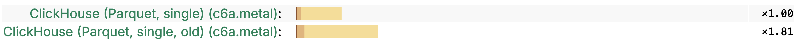

1. (55 min) What's new in ClickHouse 25.8.
2. (5 min) Q&A.
ClickHouse LTS Release.
— 45 new features 🌻
— 47 performance optimizations 🐝
— 119 bug fixes 🐝
CREATE TABLE a (s String) ORDER BY ();
CREATE TABLE b (s String) ORDER BY ();
INSERT INTO a VALUES ('Hello');
INSERT INTO b VALUES ('World');
-- This already worked:
SELECT *, _table FROM merge('^(a|b)$');
-- This is new in 25.8:
SELECT *, _table FROM a UNION ALL SELECT *, _table FROM b;
┌─s─────┬─_table─┐
1. │ Hello │ a │
2. │ World │ b │
└───────┴────────┘
Developer: Xiaozhe Yu.
Queries with large GROUP BY, ORDER BY or JOIN operations may use
disk space for temporary data when it does not fit in memory.
Before version 25.8, ClickHouse could only use local types of disks
for temporary data.
Since 25.8, any disk type is suitable for temporary data, even S3,
which is especially useful for ephemeral, disk-less machines.
Bonus: temporary data is automatically compressed!
Developer: Azat Khuzhin.
Arrow Flight — a protocol for data exchange in the Apache Arrow
format over GRPC.
Good for column-oriented databases as it keeps the data in the column representation (similar to the ClickHouse native protocol).
Now ClickHouse can query other Arrow Flight data sources
with the arrowflight table function.
And ClickHouse can work as an Arrow Flight server by itself.
Developer: zakr600, Vitaly Baranov.
Arrow Flight server in ClickHouse.
$ cat config.d/flight.yaml
arrowflight_port: 6379
arrowflight:
enable_ssl: true
ssl_cert_file: '/etc/clickhouse-server/cert.pem'
ssl_key_file: '/etc/clickhouse-server/key.pem'
Supports both put and get commands.
Developer: zakr600, Vitaly Baranov.
Arrow Flight client in ClickHouse.
SELECT * FROM arrowflight('localhost:6379', 'dataset');
CREATE TABLE table_name
ENGINE = ArrowFlight('localhost:6379', 'dataset');
Developer: zakr600, Vitaly Baranov.
Want to quickly calculate a checksum of the query result?
:) SELECT number FROM numbers(10) FORMAT Hash
c1df5386c5a4dfee17eee0e351914c83
Returns a 128-bit hash value, order sensitive.
Use-case: check that the query returns the same result.
Developer: Robert Schulze.
Allows splitting data by directories, representing the values of partition key.
CREATE TABLE test (year UInt16, country String, counter UInt8)
ENGINE = AzureBlobStorage(account_name = 'devstoreaccount1', ...,
format = 'Parquet', partition_strategy = 'hive')
PARTITION BY (year, country);
The new partition_strategy parameter allows to switch between
the 'hive' or the old, 'wildcard' modes.
Developer: Arthur Passos.
Allows splitting data by directories, representing the values of partition key.
:) INSERT INTO test VALUES (2020, 'Zimbabwe', 1), (2021, 'Brazil', 2);
:) SELECT _path, * FROM test;
┌─_path───────────────────────────────────────────────────────┬─year─┬─country──┬─counter─┐
1. │ data/year=2020/country=Zimbabwe/7351305360873664512.parquet │ 2020 │ Zimbabwe │ 1 │
2. │ data/year=2021/country=Brazil/7351305360894636032.parquet │ 2021 │ Brazil │ 2 │
└─────────────────────────────────────────────────────────────┴──────┴──────────┴─────────┘
Bonus:
— you can decide whether to write partition columns into data files;
— hive partition_strategy also makes partition columns available in SELECTs;
Developer: Arthur Passos.
ClickHouse is a multi-protocol server. It implements:
— native TCP protocol;
— HTTP(s) REST API; ODBC and JDBC drivers;
— GRPC protocol;
— Arrow Flight protocol;
— ZooKeeper protocol;
— MySQL wire protocol;
— PostgreSQL wire protocol;
Now, PostgreSQL protocol supports COPY command,
and MySQL protocol implements the information tables
that are necessary for the C# MySQL client to work with ClickHouse.
Developer: Konstantin Vedernikov.
A command, similar to SYSTEM RESTORE REPLICA,
but for Replicated databases.
Makes it possible to re-create the metadata in Keeper from the local state,
for the case when Keeper was damaged or lost.
Developer: Konstantin Morozov.
In 25.6 and before:
GRANT S3 ON *.* TO user
In 25.7:
GRANT READ, WRITE ON S3 TO user
In 25.8:
GRANT READ ON S3('s3://foo/.*') TO user
Allows a limited usage of S3 buckets and prevents data exfiltration.
Developer: Artem Brustovetskii.
SELECT * FROM s3('s3://mybucket/path.csv', CSVWithNames,
extra_credentials(role_arn =
'arn:aws:iam::111111111111:role/ClickHouseAccessRole-001'))
Until recently the feature was only available in ClickHouse Cloud.
Since 25.8 it is available for all ClickHouse users.
Bonus: GCP authentication with OAuth is also available in 25.8!
A new, faster implementation of Parquet from scratch!
Developer: Michael Kolupaev.
Demo
Developer: Alexander Sapin.
The problem: rare spikes of latencies up to 5 sec, 10 sec, 15 sec, ...
The reason: AWS S3 and Azure are complex distributed systems with their own shenanigans.
This problem was solved for AWS and GCP a few years ago with:
— using multiple connections to multiple endpoints;
— rotating endpoints for better distribution of the load;
— running a second request as soon as there is a soft timeout;
— do many retries aggressively;
The problem: rare spikes of latencies up to 5 sec, 10 sec, 15 sec, ...
Problem solved:
Results:
— no more latency spikes!
Developer: Alexander Sapin.
Example:
CREATE TABLE test
(
time DateTime,
user UInt16,
text String,
INDEX ix1(user) TYPE set(1000) GRANULARITY 5,
INDEX ix2(text) TYPE bloom_filter GRANULARITY 10
)
ORDER BY time;
How to decide in which order read and apply indices?
Developer: Maruth Goyal.
How to decide in which order read and apply indices?
Since 25.8, indices are read and applied in the order of their sizes,
which means lightweight indices first.
The sizes are measured by compressed data on disk,
and the decision is done for each part individually.
So we have a chance to filter data with less cost!
Adding a heavy index to a table does not affect queries
that filter the most by another, light index.
Developer: Maruth Goyal.
Full-featured UPDATE statement:
UPDATE my_table
SET col1 = val1, col2 = val2, ...
WHERE condition
UPDATE hits SET Title = 'Updated Title'
WHERE EventDate = today();
UPDATE wikistat SET hits = hits + 1, time = now()
WHERE path = 'ClickHouse';
Experimental in 25.7. Beta in 25.8.
Developer: Anton Popov.
— are subqueries that depend on the columns from the outer scope.
SELECT * FROM users AS u1 WHERE EXISTS (
SELECT * FROM users2 AS u2 WHERE u1.age = u2.age)
They can appear in many different contexts: EXISTS, IN, scalar...
In 25.4 we supported correlated subqueries inside the WHERE clause with the EXISTS operator.
In 25.5 we support scalar correlated subqueries inside the WHERE clause
and correlated subqueries inside SELECT!
Now it is enough to cover the TPC-H test suite without modifying queries.
Developer: Dmitry Novik.
Support for positional and equality deletes in Iceberg.
This works with the ALTER DELETE statement.
Writes into Iceberg are supported with REST and Glue catalogs.
CREATE TABLE can create a new Iceberg table, rather than just attaching.
Support for DROP TABLE for Iceberg in REST and Glue catalogs.
Developer: Konstantin Vedernikov.
Support for writes into Delta Lake tables.
Time travel support for Delta Lake tables.
Developer: Konstantin Vedernikov.
ClickHouse supports database engines for:
— Unity catalog (since 25.3);
— REST catalog (since 24.12);
— Glue catalog (since 25.3);
— Hive Metastore catalog (since 25.5);
Now all data lakes catalogs are promoted from experimental to beta.
MongoDB CDC is in Private Preview
Vertical scaling for streaming ClickPipes
to adjust the instance type for suitable workload
Azure Blob Storage connector in ClickPipes is GA
Postgres CDC: compatibility with the JSON data type
ClickHouse has the official AWS Glue connector
Improvements for Python client: perf of Arrow DataFrames
— 🇨🇦 Toronto, Sept 3
— 🇮🇳 Gurgaon/Delhi, Sept 4
— 🇺🇸 Raleigh, Sept 4
— 🇺🇸 New York AI, Sept 9
— 🇮🇱 Tel Aviv, Sept 9
— 🇹🇭 Bangkok, Sept 16
— 🇦🇪 Dubai, Sept 16
— 🇺🇸 Boston, Sept 16
— 🇮🇳 Pune, Sept 20
— 🇮🇳 Madrid, Sept 30
— Comparison of LLM chat UIs
— Agentic BI in Slack with ClickHouse MCP
— Observability in Character.AI with ClickStack
— Text search in ClickHouse
— Can LLMs replace on call SREs today?